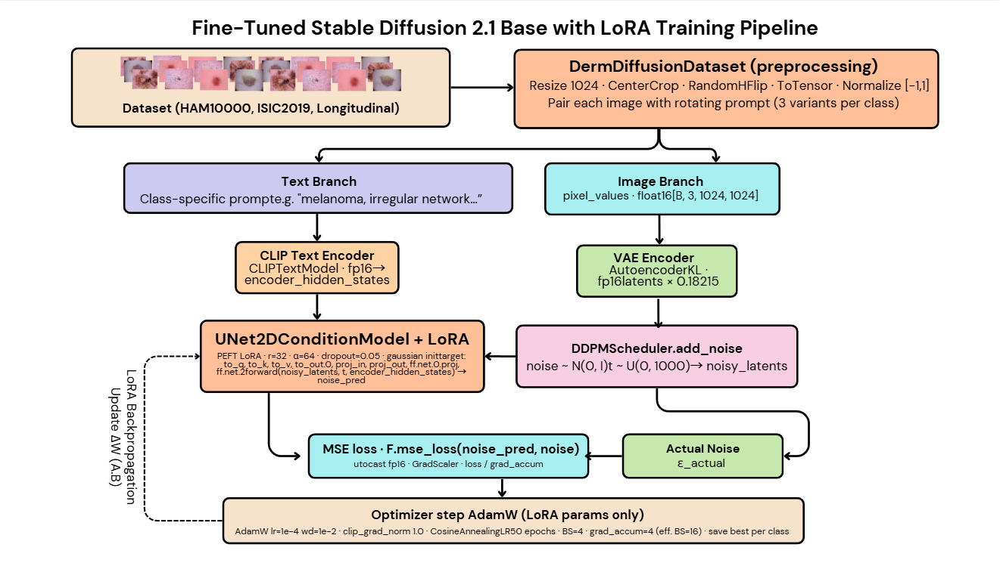
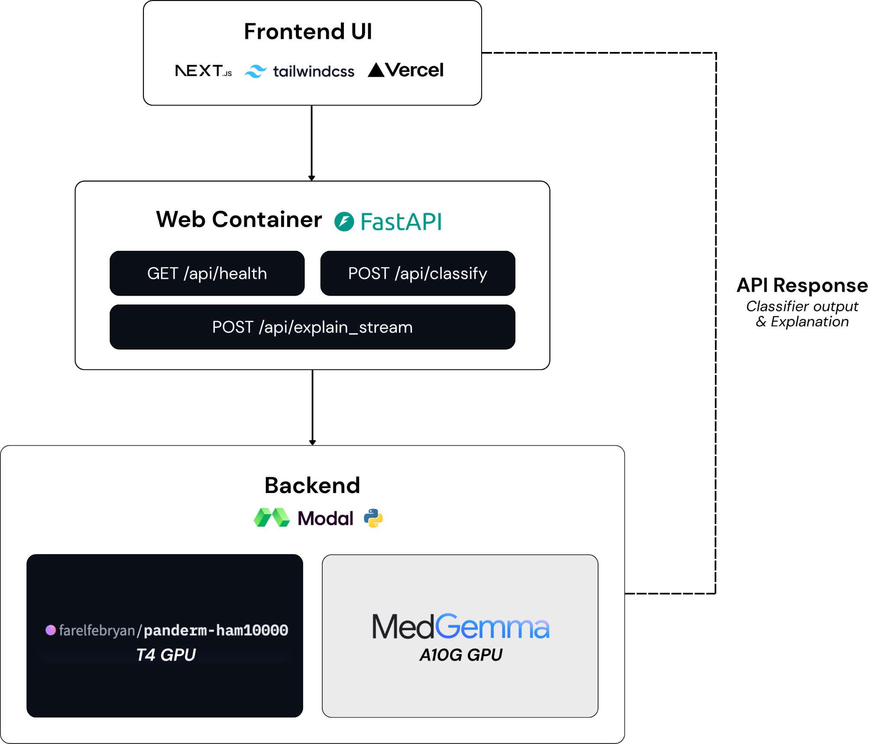
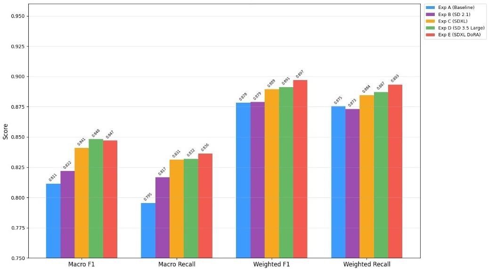
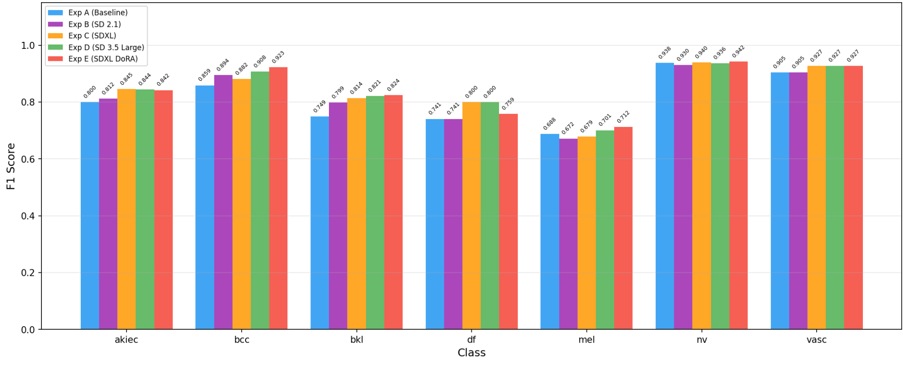
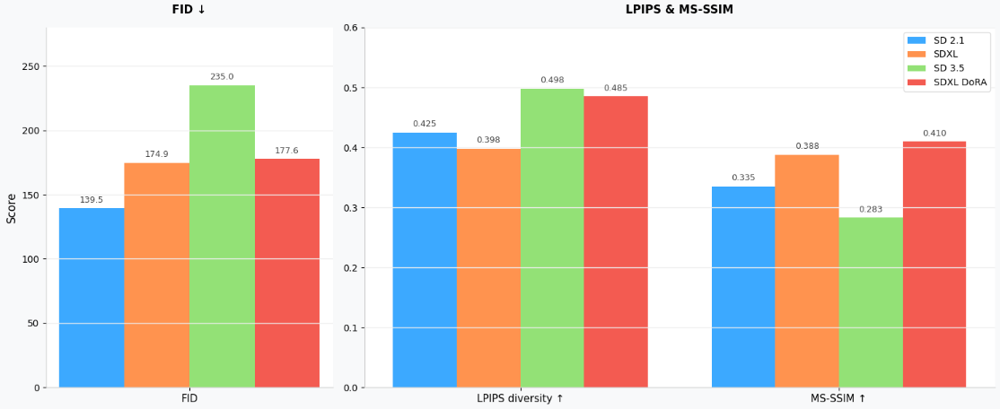

Context
Dermatological datasets are heavily skewed — common conditions dominate while rarer, often more dangerous ones sit in the long tail. Vision Transformers thrive on data; without enough samples per class, even the best architecture under-performs on the cases that matter most.
DermaDiff investigates a hybrid approach: instead of collecting more data, can we synthesize it conditionally — and does that synthetic data measurably improve classification on rare classes?
Approach
The system pairs two components that usually live in different worlds: a discriminative classifier and a generative diffusion model.
- PanDerm Vision Transformer — a domain-pretrained ViT backbone, fine-tuned for multi-class skin disease recognition.
- Stable Diffusion (conditioned) — fine-tuned on dermatology imagery to generate class-conditional synthetic samples for under-represented categories.
- Curriculum mixing — synthetic samples are introduced gradually, weighted to never dominate the real distribution.

Pipeline
Data flows through four stages: curation → conditional generation → quality filtering → joint training. A small filter network rejects synthetic images that fall outside the real-data manifold before they ever reach the classifier.

Results
Early experiments show meaningful gains on rare classes without degrading performance on common ones — a sign that the synthetic samples are adding signal rather than noise. Full benchmarks and ablations are being prepared for write-up.
- Macro-F1 improvements concentrated in the bottom-quartile classes.
- Confusion analysis suggests the model learns sharper decision boundaries in mid-frequency classes too.



Reflection
The interesting open question isn't whether diffusion can augment — it can. It's when synthetic data stops helping and starts hurting. Future work focuses on principled stopping criteria and uncertainty-aware sample weighting.